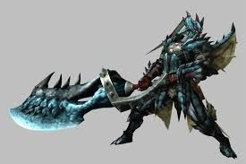
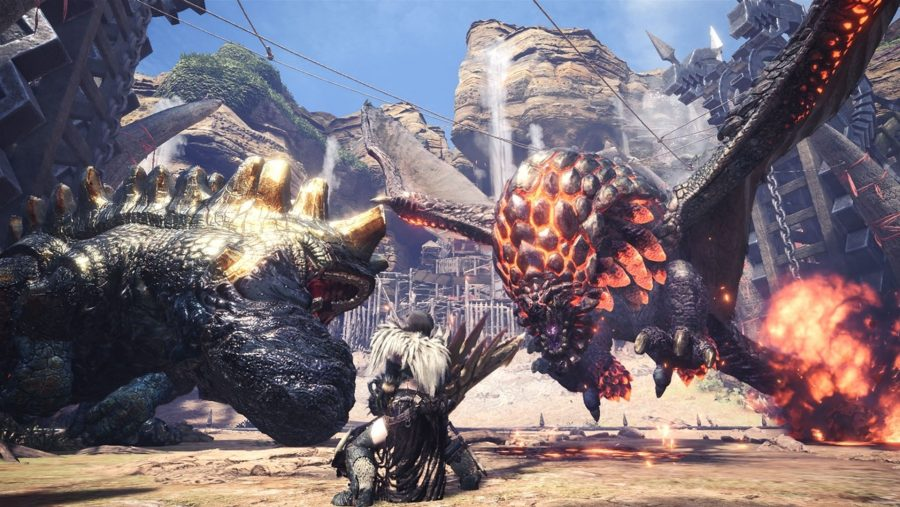

You play as a adventuring hunter trying to make a name for him or herself in a third person hack and slash RPG with an emphasis on co-op. You can choose from a large variety of weapons and 4 hunting styles to aid you in the hunt against the vast amount of monsters and beasts that are out in the world.
Everlasting hunt is a third person hack and slash RPG that focuses on co-op. You play as a nameless adventurer that is out to become famous and remembered for generations to come. Each city will have a variety of requests for adventurers to compete such as gathering herbs or slaying beasts. You will progress from city to city as requests get harder and harder. Your ultimate goal is to eventually defeat a legendary beast that no one has taken down along with the rest of your party members. You will encounter man types of enemies from simple low level mobs to boss monsters that will take an entire party of adventurers to take down. Unlike many other games, everlasting hunt does not have a leveling system, instead once you have defeated a beast either by slaying them or capturing them you will be rewarded with parts of that beast and you can then use those ingredients to craft new and better gear so that you can take on the next beast. Going from one city to another you can interact with the people in that city and through player made dialogue choices; you can befriend different adventurers into your party. The story ends when you take down the final beast, but you can continue playing in order to unlock all possible party members from every city.
Your character for the majority of the game will be clad in armor of some sort. Your looks will constantly be changing as you must equip different gear and items to combat whatever beast you are going to hunt. Your character will gain certain moves based on what weapon they are using and based on what hunting style you have equipped. For example, if you have dual swords your attacks will be fast and numerous with an emphasis on speed and mobility rather than hitting power. While if you use a Lance your attacks will be very precise and using a shield you can block most attacks that come your way. The downs side for this is that Lance is very immobile and slow. Things can also vary from hunting style to hunting style, such as from aerial style to adept style. Arial style focuses on jumping of teammates or the monster to use strong aerial attacks, while bushido is all about dodging through an attack and immediately countering out of it.
Example PS4 Controller Setup:
The main focus of the game play is taking down large monster and beasts by either slaying them or capturing them, but before you do that you must make preparations before a hunt. You need to choose which weapon to bring (there are 14 of them), which armor to wear and what items to bring. You also need to decide on what food to eat before you go on a hunt as they can give you special buffs and effects. When you encounter one of the many large and fantastical beasts in the game it will be quite and ordeal. One of the first things you will notice with our monster design is that there movements and motions will feel very real. Even if you're hunting a dragon or rock caterpillar like monster that rolls around like an wheel, they will all feel genuine and unique. Though the monsters are not real they will move in a way that you would expect them to move, making them feel more realistic. Once you have completed the request you can carve the body of the beast for parts that can be turned into new gear. The gears stats and special effects will reflect that of the monster it came from. For example, if the armor was made up of a lava snake then the armor will have a resistance to fire attacks and might have a special ability to make you immune to walking on lava. While traveling from place to place and completing requests you can gather party members from finding them and talking to them in cities, where you have to make certain dialogue choices in order for them to join your party or during certain requests there is a chance that you can meet another adventurer out in the field and befriend them. If you swap to the online mode you will be put into a different instance where there are no NPC allies but there will be a new signpost in every city that lists all of the requests that other players need help with and you can join one from there or post your own request. There are two kinds of posts that a player can make, one is where the player requests help in a hunt and so players will join the host in hunting the monster. The other is where a host will post a request to hunt a monster but not participate but instead will reward the hunters with money or items. This is the only way for players to give each other items. In actual combat depending on what weapon you choose your attacks will either hit slow and hard or fast and soft, or something in between. There are also ranged weapons if melee is not your playstyle. In general however, attack speeds on all weapons are relatively slow this will force the player to choose wisely when and when not to attack the monster. You must think before you act or else you will get punished. Also all enemies in the game including large monsters will not have visible health bars. In order to determine if a monster is about to weak and about to die you must observe the monster and see if is getting tired or limps away.
The game world will be split into different instances based on what city you are currently in. Each city is a hub where all necessary NPCs and other things are located. Each city will have an environmental theme such as a jungle city or a desert city, where all request taken from that city will have the adventurer go out into the jungle or desert to complete the request. Of course each city will look completely different from the others, for example, the desert city will have many fantasy style camels carrying carts around and being used as transportation. There will be very Aladdin themed look to everything from the buildings to what the NPCs wear. Doing this will hopefully give the player a sense of travel from one local to the next. Once you have unlocked a city you can freely travel to it at any time. There are no level constraints to any of the requests as there are no levels in the game but requests will have a recommended guild ranking as to warn you of how hard or easy the request is.
You will be put into the shoes of a brand new adventurer and as such people will look down upon you as they think you are weak. You begin to scorn everyone around you as you slowly climb up the ladder to reach your ultimate goal. For the beginning of the game you will have a feeling of loneliness and desperateness as your character rushes to complete as many requests as possible to gain fame. Towards the middle of the game you realize that as an adventurer there's only so much you can do alone and so you begin to look for people you deem trustworthy and capable. Over time you eventually open up and gather more people into your party and realize that there is more to life than your own personal ambition. Throughout the game, and especially when you are fighting a great beast, the music will be very grandiose. It will feel like you are truly on an adventure and pump up at the right moments and calm down in times or rest and recuperation. The monsters maybe mythical and fantastical beasts but they will all behave and move with such realism that you wish that they really existed.
The overall gestalt of my game would be finding your own playstyle with whatever weapon type you like and whether you're going to solo the game or do it with NPC or other player help.